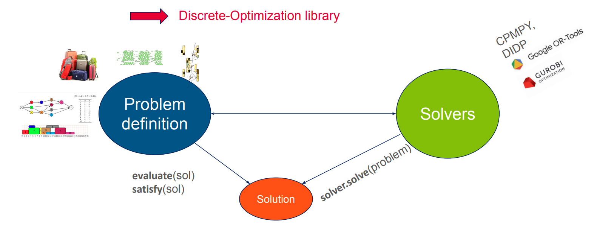

How to write its own problem/solver class?
About discrete-optimization key concepts
The discrete-optimization library introduce 3 main classes:
Problem: describes a discrete optimization problem, its objectives, how to evaluate a solution, how to check its validitySolution: a thin wrapper around the numeric attributes (numpy array, list of integers, …) defining a solution to the problemSolverDO: base class for all solvers of the library
The following diagram shows the interactions between those classes:

The main benefits of having such a common API are:
Insuring fair comparison between solvers for a given problem
Capitalizing solvers and models
Combining solvers in meta-solvers
Benchmark and visualization via a dashboard
Hyperparameters optimization
Brief presentation of knapsack problem
In this tutorial, we take the example of the knapsack problem (because of its simplicity).
This problem and adapted solvers have already been implemented in the library (see discrete_optimization.knapsack package)
and a dedicated tutorial on how to use them is available in Notebooks section.
We focus here on how we could write them from scratch.
The knapsack problem is a very common combinatorial optimization problem where you are given a knapsack of a given weight capacity \(C\) and a bunch of items with values and weights. The goal is to fill the knapsack with the best aggregated value, respecting the maximum weight constraint.
 .
.
We handle here the 0-1 knapsack problem where each item can only be taken once.
How to write its own problem class?
Let us first try to implement the problem class (and associated solution class). If your need is to implement a solver for an already existing problem, go directly to the next section.
Creating the skeletons
We start by initiating a problem class and a solution class that will be used for this type of problem.
We derive from the base classes Problem and Solution available in discrete-optimization:
from discrete_optimization.generic_tools.do_problem import Problem, Solution
class MyKnapsackProblem(Problem): ...
class MyKnapsackSolution(Solution): ...
Then use your favorite IDE to generate the methods to implement (or look in the source file of the base classes for abtract methods). You should get something like:
from discrete_optimization.generic_tools.do_problem import (
ObjectiveRegister,
Problem,
Solution,
)
class MyKnapsackProblem(Problem):
def evaluate(self, variable: Solution) -> dict[str, float]:
pass
def satisfy(self, variable: Solution) -> bool:
pass
def get_solution_type(self) -> type[Solution]:
pass
def get_objective_register(self) -> ObjectiveRegister:
pass
class MyKnapsackSolution(Solution):
def copy(self) -> Solution:
pass
Tip
with PyCharm, right-click on the class, and select “Generate…” > “Implement Methods…” (NB: you will also be suggested methods that are not mandatory but raise NotImplementedError, that could be useful for some advanced features, like use of evolutionary algorithms.)
with VSCode, click on the class name, then on the lightbulb that comes up above, then “Implement all inherited abstract classes”
To be able to apply existing local search algorithms from the library to our problem,
we need also to implement get_attribute_register() that will be used to find automatically the mutations available for our problem.
Note that this is not mandatory, especially if you do not want to apply genetic algorithms or local search to your problem.
(That’s why this method has not the decorator @abtractmethod but simply raises a NotImplementedError in the base class.)
We will also implement lazy_copy to avoid deep copying and potentially improve mutations performance.
The final skeleton looks like:
from discrete_optimization.generic_tools.do_problem import (
Problem,
Solution,
ObjectiveRegister,
)
from discrete_optimization.generic_tools.encoding_register import EncodingRegister
class MyKnapsackProblem(Problem):
def evaluate(self, variable: Solution) -> dict[str, float]:
pass
def satisfy(self, variable: Solution) -> bool:
pass
def get_solution_type(self) -> type[Solution]:
pass
def get_objective_register(self) -> ObjectiveRegister:
pass
def get_attribute_register(self) -> EncodingRegister:
pass
class MyKnapsackSolution(Solution):
def copy(self) -> Solution:
pass
def lazy_copy(self) -> Solution:
return super().lazy_copy()
Implementation
We start by implementing a first part of MyKnapsackProblem:
constructor: set the main characteristics of the instance (items and max capacity)
get_solution_type: link to
MyKnapsackSolutionget_objective_register: document which objectives can be computed (and are keys of the dictionary returned by
evaluate()), and how to aggregate them. Seediscrete_optimization.generic_tools.do_problem.ObjectiveRegisterfor more information.
Item = tuple[int, int] # value, weight
class MyKnapsackProblem(Problem):
def __init__(self, items: list[Item], max_capacity: int):
self.items = items
self.max_capacity = max_capacity
def get_solution_type(self) -> type[Solution]:
"""Specify associated solution type."""
return MyKnapsackSolution
def get_objective_register(self) -> ObjectiveRegister:
"""Specify the different objectives and if we need to aggregate them."""
return ObjectiveRegister(
dict_objective_to_doc=dict(
# total value of taken items: main objective
value=ObjectiveDoc(type=TypeObjective.OBJECTIVE, default_weight=1.0),
# weight violation (how much we exceed the max capactity): penalty to be removed with a big coefficient
weight_violation=ObjectiveDoc(
type=TypeObjective.PENALTY, default_weight=-1000.0
),
),
objective_handling=ObjectiveHandling.AGGREGATE, # aggregate both objective
objective_sense=ModeOptim.MAXIMIZATION, # maximize resulting objective
)
Before going on, we will implement MyKnapsackSolution as its characteristics will be needed for the remaining methods of MyKnapsackProblem.
Several notes:
The base class Solution already implements a
__init__()method that stores the problem the solution is related to. We call it in our constructor and also specify theproblemattribute type so that the IDE can type it properly.We implement also
lazy_copy()which defaults tocopy()but here avoid a deep copy oflist_takento improve the performance of evolutionary algorithms that mutate the solutions.
class MyKnapsackSolution(Solution):
"""Solution class for MyKnapsackProblem.
Args:
problem: problem instance for which this is a solution
list_taken: list of booleans specifying if corresponding item has been taken.
Must be of same length as problem.items
"""
problem: MyKnapsackProblem # help the IDE to type correctly
def __init__(self, problem: MyKnapsackProblem, list_taken: list[bool]):
super().__init__(problem=problem) # stores the problem attribute
self.list_taken = list_taken
def copy(self) -> Solution:
"""Deep copy the solution."""
return MyKnapsackSolution(
problem=self.problem, list_taken=list(self.list_taken)
)
def lazy_copy(self) -> Solution:
"""Shallow copy the solution.
Not mandatory to implement but can increase the speed of evolutionary algorithms.
"""
return MyKnapsackSolution(problem=self.problem, list_taken=self.list_taken)
Now we can finish the implementation of the problem:
class MyKnapsackProblem(Problem):
...
def get_attribute_register(self) -> EncodingRegister:
"""Describe attributes of a solution.
To be used by evolutionary solvers and local search to choose the appropriate mutations
without implementing a dedicated one.
"""
return EncodingRegister(
{"list_taken": ListBoolean(length=len(self.items))}
)
def evaluate(self, variable: Solution) -> dict[str, float]:
"""Evaluate the objectives corresponding to the solution.
The objectives must match the ones defined in `get_objective_register`.
"""
if not isinstance(variable, MyKnapsackSolution):
raise ValueError("variable must be a `MyKnapsackSolution`")
value = self.compute_total_value(variable)
weight = self.compute_total_weight(variable)
return dict(value=value, weight_violation=max(0, weight - self.max_capacity))
def satisfy(self, variable: Solution) -> bool:
"""Check that the solution satisfies the problem.
Check the weight violation.
"""
if not isinstance(variable, MyKnapsackSolution):
return False
return self.compute_total_weight(variable) <= self.max_capacity
def compute_total_weight(self, variable: MyKnapsackSolution) -> int:
"""Compute the total weight of taken items."""
return sum(
taken * weight
for taken, (value, weight) in zip(variable.list_taken, self.items)
)
def compute_total_value(self, variable: MyKnapsackSolution) -> int:
"""Compute the total value of taken items."""
return sum(
taken * value
for taken, (value, weight) in zip(variable.list_taken, self.items)
)
Note
The available attribute types are to be found in the module discrete_optimization.generic_tools.encoding_register.
The complete resulting python module with creation of problem, solutions and evaluation and satisfiability checks can be found here: tutorial_new_problem.py.
Apply a generic solver: local search
Now that we have implemented a new problem, we can try to solve it with an existing solver.
In discrete-optimization, most solvers are specialized to a problem class.
But evolutionary algorithms (from discrete_optimization.generic_tools.ea) or local search (from discrete_optimization.generic_tools.ls) can be applied directly.
In this section we use simulated annealing to solve a knapsack instance.
We need to define an instance of knapsack problem. We also define a dummy intial solution.
# instantiate a knapsack problem
problem = MyKnapsackProblem(
max_capacity=10,
items=[
(2, 5), # item 0: value=2, weight=5
(3, 1), # item 1: value=3, weight=1
(2, 4), # item 2: value=2, weight=4
(5, 9), # item 3: value=5, weight=9
]
)
# dummy solution (not taking anything)
solution = MyKnapsackSolution(
problem=problem,
list_taken=[False,] * len(problem.items)
)
The simulated annealing needs a mutation to apply at each step. We can select all mutations compatible with the declared solution attributes.
mixed_mutation = create_mutations_portfolio_from_problem(
problem=problem,
)
Then we create the simulated annealing solver:
# restart and temperature handler
restart_handler = RestartHandlerLimit(3000)
temperature_handler=TemperatureSchedulingFactor(1000, restart_handler, 0.99)
# simulated annealing solver
sa = SimulatedAnnealing(
problem=problem,
mutator=mixed_mutation,
restart_handler=restart_handler,
temperature_handler=temperature_handler,
mode_mutation=ModeMutation.MUTATE,
)
And solve, get the best solution, display it, and check its satisfiability:
result_storage = sa.solve(
initial_variable=solution,
nb_iteration_max=1000, # increase for a more realistic problem instance
)
sol, fit = result_storage.get_best_solution_fit()
items_taken_indices = [i for i, taken in enumerate(sol.list_taken) if taken]
print(f"Best fitness: {fit}")
print(f"Taking items n°: {items_taken_indices}")
assert problem.satisfy(sol)
The complete python script can be found here: tutorial_new_problem_ls.py,
and should be run in the same directory as the previous module tutorial_new_problem.py so that you can import your new classes.
To go further
Tasks problem (scheduling/allocation)
If your problem can be seen as an allocation or a scheduling problem,
you should consider also implementing the related API
(i.e. derive from AllocationProblem or SchedulingProblem from discrete_optimization.generic_tasks_tools subpackage).
If you do so:
you will soon have access to an autogenerated CP-SAT solver (work in progress);
you will have access to a dedicated constraint handler working with any cp solver implementing the appropriate API (i.e. deriving from
AllocationSolverorSchedulingSolver), to go with a generic LNS (Large Neighborhood Search) solver.
See the dedicated tutorial.
How to write its own solver class?
Now that we have a new problem and associated solution classes MyKnapsackProblem/MyKnapsackSolution,
let us create solvers adapted to it.
Inheriting directly from base class SolverDO (ex: the greedy solver)
To showcase how a solver can be created directly from the base class, we will implement a simple greedy solver.
Creating the skeleton
We start by initiating a solver class by simply deriving from the base class SolverDO:
from discrete_optimization.generic_tools.do_solver import SolverDO
class MyKnapsackGreedySolver(SolverDO): ...
Then, as before, use your favorite IDE to generate the methods to implement (or look in the source file of the base classes for abtract methods). You should get something like:
from typing import Optional, Any
from discrete_optimization.generic_tools.callbacks.callback import Callback
from discrete_optimization.generic_tools.do_solver import SolverDO
from discrete_optimization.generic_tools.result_storage.result_storage import (
ResultStorage,
)
class MyKnapsackGreedySolver(SolverDO):
def solve(
self, callbacks: Optional[list[Callback]] = None, **kwargs: Any
) -> ResultStorage:
pass
Tip
with PyCharm, right-click on the class, and select “Generate…” > “Implement Methods…”
with VSCode, click on the class name, then on the lightbulb that comes up above, then “Implement all inherited abstract classes”
Implementation
First version
The only mandatory method to implement is solve().
In a greedy approach, the item with the higher ratio value/weight is selected and added to the solution.
The process repeats until the max capacity is reached.
Note that SolverDO already implements an __init__() method that
stores the problem in the problem attribute and build the methods computing and aggregating the objectives.
You could still override it to ensure dealing with a MyKnapsackProblem, but we keep it simple here.
We only specify the type of the problem attribute to help the IDE to correctly type it.
class MyKnapsackGreedySolver(SolverDO):
"""Greedy solver class for MyKnapsackProblem.
This solver sort the items by density (value/weight)
and take them in this order until the max capacity is reached.
"""
problem: MyKnapsackProblem # will be set by SolverDO.__init__(), useful to help the IDE typing correctly
def solve(
self, callbacks: Optional[list[Callback]] = None, **kwargs: Any
) -> ResultStorage:
"""Solve the problem
Args:
callbacks: list of callbacks used to hook into the various stage of the solve
**kwargs: any argument specific to the solver
Returns: a result object containing a pool of solutions to the problem
"""
# Sort items by density=value/weight (discard items overcoming the max capacity)
def compute_density(item: Item) -> float:
value, weight = item
return value / weight
i_items_by_density = sorted(
(
i_item
for i_item, (value, weight) in enumerate(self.problem.items)
if weight <= self.problem.max_capacity
),
key=lambda i_item: compute_density(self.problem.items[i_item]),
reverse=True,
)
# Take items until reaching max capacity
total_weight = 0
list_taken = [
False,
] * len(self.problem.items)
for i_item in i_items_by_density:
value, weight = self.problem.items[i_item]
total_weight += weight
if total_weight > self.problem.max_capacity:
break
else:
list_taken[i_item] = True
# Contruct solution
sol = MyKnapsackSolution(problem=self.problem, list_taken=list_taken)
# Compute aggregated fitness
fit = self.aggreg_from_sol(sol)
# Construct result_storage (with only one solution but could contain more for other solvers)
res = self.create_result_storage(list_solution_fits=[(sol, fit)])
return res
Then solving the problem with it will sum up to
solver = MyKnapsackGreedySolver(problem=problem)
solution = solver.solve().get_best_solution()
Adding callbacks support
Note that the method solve() takes a list of callbacks as argument to allow a user to hook
at different points of the solving process.
See this notebook for more information about callbacks.
To allow the callbacks mechanics we should:
wrap the callbacks into a
CallbackListto call the whole list at oncecall
on_solve_start()at solve startcall
on_solve_end()at solve endcall
on_step_end()at end of each step for an iterative solver, usually after each new solution found
To see it in action, we will store a partial solution each time a new item is added:
class MyKnapsackGreedySolver(SolverDO):
...
def solve(
self, callbacks: Optional[list[Callback]] = None, **kwargs: Any
) -> ResultStorage:
# first call to callbacks
callbacks_list = CallbackList(callbacks=callbacks)
callbacks_list.on_solve_start(solver=self)
# Sort items by density=value/weight (discard items overcoming the max capacity)
def compute_density(item: Item) -> float:
value, weight = item
return value / weight
i_items_by_density = sorted(
(
i_item
for i_item, (value, weight) in enumerate(self.problem.items)
if weight <= self.problem.max_capacity
),
key=lambda i_item: compute_density(self.problem.items[i_item]),
reverse=True,
)
# take items until reaching max capacity
total_weight = 0
step = 0
list_taken = [
False,
] * len(self.problem.items)
res = (
self.create_result_storage()
) # empty result storage (to be consumed by callbacks)
for i_item in i_items_by_density:
value, weight = self.problem.items[i_item]
total_weight += weight
if total_weight > self.problem.max_capacity:
break
else:
list_taken[i_item] = True
# contruct partial solution (copy the list to avoid ending with same solutions)
sol = MyKnapsackSolution(
problem=self.problem, list_taken=list(list_taken)
)
# compute aggregated fitness
fit = self.aggreg_from_sol(sol)
# store the (sol, fit) tuple into the result storage
res.append((sol, fit))
# intermediate call to callbacks
callbacks_list.on_step_end(step=step, res=res, solver=self)
step += 1
# final call to callbacks
callbacks_list.on_solve_end(res=res, solver=self)
return res
We can solve the problem with a callback logging the objective at each step via:
solver = MyKnapsackGreedySolver(problem=problem)
solution = solver.solve(callbacks=[ObjectiveLogger()]).get_best_solution()
Solver in action
The resulting script can be found here: tutorial_new_solver_greedy.py, with an example of how to use it with a callback
logging the objective at each iteration. It should be run in the same directory as the previous module
tutorial_new_problem.py that declares the knapsack problem and solution classes, so that they can be imported.
Taking advantage of d-o wrappers for 3rd-party libraries
When implementing a solver based on another existing optimization library like OR-Tools or Gurobi, discrete-optimization have already some wrappers prepared for you.
In these wrappers, the solve() method is already implemented, taking into account the main parameters from the 3rd party library,
handling the callbacks and sometimes already managing other extra-features like warm-start or explainability.
Generally, you will just have to implement:
init_model()that translates the problem in the other library language,retrieve_solution()or equivalent, in charge of translating solutions in d-o format.
In the next section, we show how to use the OR-Tools/CP-SAT and OR-Tools/MathOpt wrappers. A curated list of other wrappers is available in the “To go further” section.
CP solver (ex: OR-Tools/CP-SAT)
Let us see how to implement a constraint programming solver making use of the OR-Tools/CP-SAT solver.
Creating the skeleton
We start by deriving from our wrapper OrtoolsCpSatSolver:
from discrete_optimization.generic_tools.ortools_cpsat_tools import OrtoolsCpSatSolver
class MyKnapsackCpSatSolver(OrtoolsCpSatSolver): ...
Then, we generate the methods to implement (for instance thanks to a smart IDE or by looking at OrtoolsCpSatSolver source code).
We also override init_model() (it is not in abstract method as it is already trivially implemented in base class SolverDO).
You should get something like:
from typing import Any
from ortools.sat.python.cp_model import CpSolverSolutionCallback
from discrete_optimization.generic_tools.do_problem import Solution
from discrete_optimization.generic_tools.ortools_cpsat_tools import OrtoolsCpSatSolver
class MyKnapsackCpSatSolver(OrtoolsCpSatSolver):
def init_model(self, **kwargs: Any) -> None:
super().init_model(**kwargs)
def retrieve_solution(self, cpsolvercb: CpSolverSolutionCallback) -> Solution:
pass
Tip
with PyCharm, right-click on the class, and select “Generate…” > “Implement Methods…” / “Override Methods…”
with VSCode, click on the class name, then on the lightbulb that comes up above, then “Implement all inherited abstract classes”. Then start by writing
def init_model(), it should complete it for you.
Implementation
__init__(): this method is already defined by parent class, and sets the attributeproblem. To help the IDE to type correctly, we can specify its expected class.init_model(): the method from the super class initializes acp_modelattribute of typeortools.sat.python.cp_model.CpModelin which we must encode our knapsack problem.retrieve_solution(): we must translate the internal solution of the CP-SAT solver into aMyKnapsackSolution. This will be used for each new solution found via an ortools callback.
class MyKnapsackCpSatSolver(OrtoolsCpSatSolver):
"""CP-SAT solver for the knapsack problem."""
problem: MyKnapsackProblem # will be set by SolverDO.__init__(), useful to help the IDE typing correctly
def init_model(self, **kwargs: Any) -> None:
"""Init the CP model."""
super().init_model(**kwargs) # initialize self.cp_model
# create the boolean variables for each item
self.variables = [self.cp_model.new_bool_var(name=f"x_{i}") for i in range(len(self.problem.items))]
# add weight constraint
total_weight = sum(
self.variables[i] * weight
for i, (value, weight) in enumerate(self.problem.items)
)
self.cp_model.add(total_weight <= self.problem.max_capacity)
# maximize value
total_value = sum(
self.variables[i] * value
for i, (value, weight) in enumerate(self.problem.items)
)
self.cp_model.maximize(total_value)
def retrieve_solution(self, cpsolvercb: CpSolverSolutionCallback) -> Solution:
"""Translate a cpsat solution into a d-o solution.
Args:
cpsolvercb: the ortools callback called when the cpsat solver finds a new solution.
Returns:
"""
taken = [bool(cpsolvercb.Value(var)) for var in self.variables]
return MyKnapsackSolution(problem=self.problem, list_taken=taken)
We can solve the problem with a callback logging the objective at each step via:
solver = MyKnapsackCpSatSolver(problem=problem)
solution = solver.solve(callbacks=[ObjectiveLogger()]).get_best_solution()
Solver in action
The code for this CP-SAT solver and how to use it can be found here: tutorial_new_solver_cpsat.py.
Note that it should be run in the same directory as the previous module
tutorial_new_problem.py that declares the knapsack problem and solution classes, so that they can be imported.
MILP solver (ex: OR-Tools/MathOpt)
Let us see how to implement a mixed integer linear programming solver making use of the OR-Tools/MathOpt solver.
Creating the skeleton
We start by deriving from our wrapper OrtoolsMathOptMilpSolver:
from discrete_optimization.generic_tools.lp_tools import OrtoolsMathOptMilpSolver
class MyKnapsackMathOptSolver(OrtoolsMathOptMilpSolver): ...
Then, we generate the methods to implement (only the fully necessary ones), which are init_model()
and retrieve_solution():
from typing import Any, Callable
from discrete_optimization.generic_tools.do_problem import Solution
from discrete_optimization.generic_tools.lp_tools import OrtoolsMathOptMilpSolver
class MyKnapsackMathOptSolver(OrtoolsMathOptMilpSolver):
def init_model(self, **kwargs: Any) -> None:
pass
def retrieve_current_solution(
self,
get_var_value_for_current_solution: Callable[[Any], float],
get_obj_value_for_current_solution: Callable[[], float],
) -> Solution:
pass
Tip
with PyCharm, right-click on the class, and select “Generate…” > “Implement Methods…” / “Override Methods…”
with VSCode, click on the class name, then on the lightbulb that comes up above, then “Implement all inherited abstract classes”. Then start by writing
def init_model(), it should complete it for you.
Implementation
__init__(): this method is already defined by parent class, and sets the attributeproblem. To help the IDE to type correctly, we can specify its expected class.init_model(): the method must initialize amodelattribute of typeortools.math_opt.python.model.Modelin which we must encode our knapsack problem.retrieve_solution(): we must translate the internal solution of the MathOpt solver into aMyKnapsackSolution. As this is a method of the more genericMilpSolverclass, it takes callables as argument that are responsible for mapping variables into their values in internal solution. This callable will be automatically adapted to the MathOpt framework (and updated accordingly in Gurobi wrapper). Note that the value can be a float number between 0 and 1, so we check whether it is above or below 0.5.
class MyKnapsackMathOptSolver(OrtoolsMathOptMilpSolver):
problem: MyKnapsackProblem # will be set by SolverDO.__init__(), useful to help the IDE typing correctly
def init_model(self, **kwargs: Any) -> None:
"""Create mathopt `model` to encode the knapsack problem."""
self.model = mathopt.Model()
self.variables = [
self.model.add_binary_variable(name=f"x_{i}")
for i in range(len(self.problem.items))
]
# add weight constraint
total_weight = mathopt.LinearSum(
self.variables[i] * weight
for i, (value, weight) in enumerate(self.problem.items)
)
self.model.add_linear_constraint(total_weight <= self.problem.max_capacity)
# maximize value
total_value = mathopt.LinearSum(
self.variables[i] * value
for i, (value, weight) in enumerate(self.problem.items)
)
self.model.maximize(total_value)
def retrieve_current_solution(
self,
get_var_value_for_current_solution: Callable[[Any], float],
get_obj_value_for_current_solution: Callable[[], float],
) -> Solution:
"""Translate the mathopt solution into a d-o solution
Args:
get_var_value_for_current_solution: mapping a mathopt variable to its value in the solution
get_obj_value_for_current_solution: returning the mathopt objective value
Returns:
"""
return MyKnapsackSolution(
problem=self.problem,
list_taken=[
get_var_value_for_current_solution(var)
>= 0.5 # represented by a float between 0. and 1.
for var in self.variables
],
)
We can solve the problem with a callback logging the objective at each step via:
solver = MyKnapsackCpSatSolver(problem=problem)
solution = solver.solve(
mathopt_solver_type=mathopt.SolverType.GSCIP, # choose your preferred mathopt subsolver
callbacks=[ObjectiveLogger()]
).get_best_solution()
Warm start
Moreover, if we implement the method convert_to_variable_values() that translates a solution into
a mapping variable -> value, we enable warmstart:
class MyKnapsackMathOptSolver(OrtoolsMathOptMilpSolver):
...
def convert_to_variable_values(
self, solution: Solution
) -> dict[mathopt.Variable, float]:
assert isinstance(solution, MyKnapsackSolution)
return {
var: float(taken) for var, taken in zip(self.variables, solution.list_taken)
}
solver = MyKnapsackCpSatSolver(problem=problem)
solver.init_model() # explicit call to init_model() needed to make work warm-start
# warm-start to a specified solution
solver.set_warm_start(a_previous_solution)
# solve will start from it (depends on the mathopt subsolver chosen though)
solution = solver.solve(
mathopt_solver_type=mathopt.SolverType.GSCIP,
callbacks=[ObjectiveLogger()]
).get_best_solution()
Solver in action
The code for this MathOpt solver and how to use it can be found here: tutorial_new_solver_mathopt.py.
Note that it should be run in the same directory as the previous module
tutorial_new_problem.py that declares the knapsack problem and solution classes, so that they can be imported.
Note
The MILP wrappers in d-o (for now MathOpt and Gurobi) share a common API to define a model, so that it is easy to switch from one to another.
Here, for simplicity we chose to directly use the MathOpt API, but we could also have implemented init_model() in a common base class like:
class _BaseKnapsackMilpSolver(MilpSolver):
def init_model(self, **kwargs: Any) -> None:
self.model = self.create_empty_model()
self.variables = [
self.add_binary_variable(name=f"x_{i}")
for i in range(len(self.problem.items))
]
total_weight = self.construct_linear_sum(
self.variables[i] * weight
for i, (value, weight) in enumerate(self.problem.items)
)
self.add_linear_constraint(total_weight <= self.problem.max_capacity)
total_value = self.construct_linear_sum(
self.variables[i] * value
for i, (value, weight) in enumerate(self.problem.items)
)
self.set_model_objective(total_value, minimize=False)
then inherit it with OrtoolsMathOptMilpSolver or GurobiMilpSolver to generate a MathOpt or Gurobi knapsack solver.
This is how it is done in the d-o implementation of knapsack MILP solver.
See discrete_optimization.knapsack.solvers.lp for more details.
To go further
List of existing wrappers (Gurobi, OR-Tools, cpmpy, DIDPPy, …)
As shown above, when implementing a solver based on libraries already integrated in discrete-optimization, you can derive from
the corresponding wrappers defined in discrete_optimization.generic_tools to avoid redefining solve(). Generally
you will just have to implement
init_model()that translates the problem in the other library language,retrieve_solution()or equivalent, in charge of translating solutions in d-o format.
Here is a curated list of the integrated libraries and corresponding wrappers:
DIDPPy (dynamic programming):
discrete_optimization.generic_tools.dyn_prog_tools.DpSolverclingo (answer set programming):
discrete_optimization.generic_tools.asp_tools.AspClingoSolverOR-Tools/CP-SAT (contraint programming):
discrete_optimization.generic_tools.ortools_cpsat_tools.OrtoolsCpSatSolvercpmpy (wrapping several constraint programming/mixed-integer linear programming solvers, with integrated explainablity tools):
discrete_optimization.generic_tools.cpmpy_tools.CpmpySolverOR-Tools/MathOpt (wrapping several mixed-integer linear programming solvers):
discrete_optimization.generic_tools.lp_tools.OrtoolsMathOptMilpSolverGurobi (mixed-integer linear programming):
discrete_optimization.generic_tools.lp_tools.GurobiMilpSolver
Check implementations for existing problems to see them in action (e.g. solvers in discrete_optimization.coloring.solvers).
Implementing the lexico API
When multiple objectives are defined for a given solver, you can implement some methods to enable lexicographic optimization. For that you need to:
declare the solver compatible with the lexico API by overriding
implements_lexico_api()so that it returnsTrue,implement the following methods
set_lexico_objective()add_lexico_constraint()get_lexico_objective_value()remove_constraints()
You can see an example of such an implementation with discrete_optimization.rcpsp.solvers.cpsat.CpSatCumulativeResourceRcpspSolver
and see it in action in the corresponding tutorial on lexico meta-solver.
Solvers for TasksProblem (scheduling/allocation)
If the problem you want to solve is deriving from TasksProblem or its child classes (mainly SchedulingProblem and AllocationProblem),
you should have soon access to an autogenerated CP-SAT solver (work in progress).
Meanwhile, if you implement a CP-SAT solver deriving
from SchedulingCpsatSolver or AllocationCpsatSolver, you will have access to a generic LNS (Large Neighborhood Search) solver.
See the dedicated tutorial.